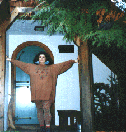

| HOME | SITE MAP |

Yo vengo de una tierra montañosa, donde lo verde es más sano que el café es rico. Anduve por los campos y al estirar la mano tenía moras, guayabas, caña, zapote, pepitas rojas de café, y una vez hasta hojas de cocaína. Todo y más florece en el cuerpo de Colombia, con una belleza y potencia que jamás he sentido. Tengo familia en pueblos escondidos en las montañas, en valles, en fincas, al lado del mar Atlántico y en ciudades sucias e inmensas. Mi familia es pobre y de pueblo, de plata y condominiums. Pero todas son de oro y esmeralda, de flores y riqueza de la tierra.
Yo vengo de una tierra montañosa, y ahora ando por los expressways de una ciudad plana y con palmas. El mismo mar rodea por aquí, pero las aguas cambian de sabor.
Cuando yo tenía ocho años mi tía Teñito mató a mi gallina favorita, Cuki. Nos las comimos mi última noche en el Líbano y no vi este pueblito por muchos años después. Hicimos un trasteo total. Mi abuelita Blanca me dio plumas de colores en el aeropuerto de Bogotá. Yo lloré y cuando llegamos a Miami jugaba por horas con las puertas automáticas.
Los juegos siguieron pero me traumatizaron profundamente. También me sometí a sobrevivir. Hablé Spanglish mientras que perfeccionaba mi inglés. Y por no sentirme “spic” de tipo inmundo, me “Americanizé.” No me identifiqué con la otra gente latina en Miami, y me hice amigas con las gringas.
Pasé muchos veranos en Colombia. Un verano en Barranquilla tuve “heterosexual training” muy estricto con mis tías de tacones y uñas largas y rojas. Me enseñaron a pintarme la cara y a alisarme el pelo, tomar pastillas para adelgazar, ponerme vestidos y coquetear. Pero mi manera de caminar era “brusca” y no encontré el paso fino. Yo nada más quería embarrarme y rodar por las montañas.
En Miami me sentí como gringa y colombiana, pero empecé a odiar a los americanos. Vi a los anglos como gente fría, culturalmente ignorantes, snobs, y orgullosos de un poder mundial del que les debiera dar pena. Seguí con amigas gringas, odiando sus cualidades americanas, y a la vez reconociendo que yo soy más “americana” que quiero ser.
Juntarme con otras latinas ha sido difícil porque yo soy muy libre de tradiciones. En la universidad yo andaba en ambiente de old hippies. Me metí al movimiento anti-nuclear, paré de alisarme el pelo y afeitarme. Fui vegetariana, humanitaria, estudié yoga y hasta viví en un ashram por un mes. Todos ambientes muy anglo — y las latinas no comen tofu!
Yo fui a estudiar en Gainesville y mi mundo se transformó. Después de años de desear y amar mujeres tuve oportunidad para vivirlo. A la vez que mi vida fue de pura lesbiana, estudié y practiqué brujería Europea anarquista con una coven díanica de mujeres bellas y casi todas blancas.
Me hizo tanta falta mi familia y lo latino de mi vida que me mudé para Miami. Trabajé en una compraventa en downtown en un ambiente muy sexista y racista. Encontré una lesbiana puertorriqueña en una tienda de jugos naturales. La visitaba cada oportunidad que tenía, pero me desilusionó porque ella era como mis tías, de tacones y uñas largas y rojas. Ambas éramos lesbianas y latinas, pero de otros mundos.
Yo sigo en otros mundos. Mi pelo lo tengo libre en sus roscas. Yo veo fotos de cuando yo tenía el pelo liso y me da rabia que por tantos años no conocí mi mismo fuego. En un festival musical de mujeres aprendí las palabras “woman of color” y las examinado en mi vida. ¿Si yo no me siento “blanca” soy de “color”? ¿A quién le pertenecen estas palabras y quién me identifica? Claro que soy yo la que me identifico. Yo soy colombiana, lesbiana, y hermana de la mujer latina. También soy bruja, activista, gitana, masajista y feminista radical.
Las palmas de Miami son altas y sus cabellos se estiran hacia el sol. En el viento suenan como las olas del mar. Me siento en la playa y juego con la arena entre mis manos. Con un montoncito armo una montaña, con el otro sigue la cadena. ¿Cómo están las montañas de mi tierra? Desde las palmas doy un paso y cruzo el mar Atlántico. Busco la mora, guayaba y la hermana lesbiana.
Written primavera de 1986, miami beach
© 1986 Tatiana de la Tierra
"Resident Alien." Originally appeared in Chispa y Chisme: Boletin para lesbianas latinas Spring 1986, 2.
Back to Tatiana de La Tierra Main Page Link